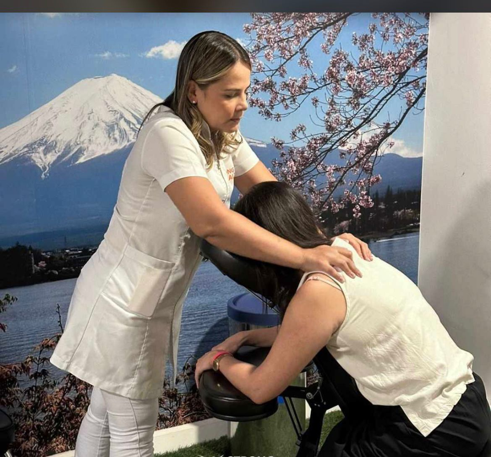

A massagem domiciliar oferece uma série de vantagens para quem busca relaxamento, bem-estar e recuperação no conforto de casa.
Com a massoterapia, você pode desfrutar de técnicas terapêuticas que aliviam o estresse, diminuem a tensão muscular, melhoram a
circulação sanguínea e promovem um equilíbrio físico e emocional. Além de evitar deslocamentos e filas, a massagem em casa
permite que você aproveite os benefícios da terapia corporal sem sair do seu ambiente de conforto.
Como Funciona o Trabalho
Priscila traz sua vasta experiência e cuidado para cada sessão, garantindo que seus clientes recebam um atendimento personalizado
e de qualidade. Suas sessões são adaptadas para atender às necessidades individuais, seja para aliviar dores musculares, promover
relaxamento profundo ou auxiliar na recuperação do corpo.
Atendimento no Conforto do Seu Lar
Priscila leva o atendimento até você! Com todos os equipamentos necessários, como macas, toalhas e óleos terapêuticos,
ela cria um ambiente propício para a massagem diretamente no seu lar. Cada sessão começa com uma breve consulta para
entender suas necessidades e, a partir disso, Priscila aplica as técnicas adequadas, como massagem relaxante,
shiatsu ou drenagem linfática.
Sessão de Massagem
Ao final de cada sessão, você sentirá não apenas alívio físico, mas também um bem-estar emocional, graças à abordagem
cuidadosa e profissional de Priscila. O objetivo é proporcionar um momento de autocuidado sem precisar sair de casa,
para que você possa relaxar completamente e renovar suas energias.
Nossos Serviços
Massagem Relaxante
Alivia tensões e proporciona um relaxamento profundo.
Shiatsu
Técnica oriental que equilibra a energia vital e melhora a circulação.
Drenagem Linfática
Ajuda na eliminação de toxinas e na redução do inchaço corporal.
Sobre Priscila De Santana Souza

Priscila De Santana Souza é uma massoterapeuta qualificada e apaixonada pela arte de curar através do toque. Formada em massoterapia, Priscila se destaca pela sua habilidade de proporcionar relaxamento profundo e alívio das tensões musculares.
Com uma vasta experiência em diversas técnicas, incluindo Massagem Relaxante, Shiatsu e Drenagem Linfática, Priscila é comprometida em ajudar seus clientes a encontrar o equilíbrio entre corpo e mente. Sua abordagem cuidadosa e personalizada garante que cada sessão seja única e adaptada às necessidades de cada pessoa.
Além de suas habilidades técnicas, Priscila é conhecida pela sua atenção aos detalhes e sua dedicação em proporcionar uma experiência de bem-estar completa. Seu objetivo é fazer com que cada cliente se sinta renovado, tanto física quanto emocionalmente, após cada sessão.